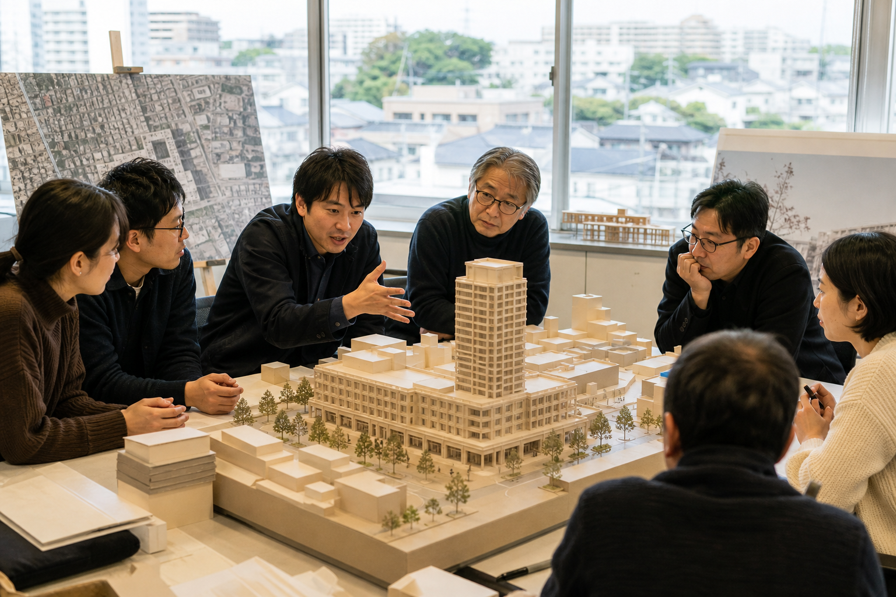
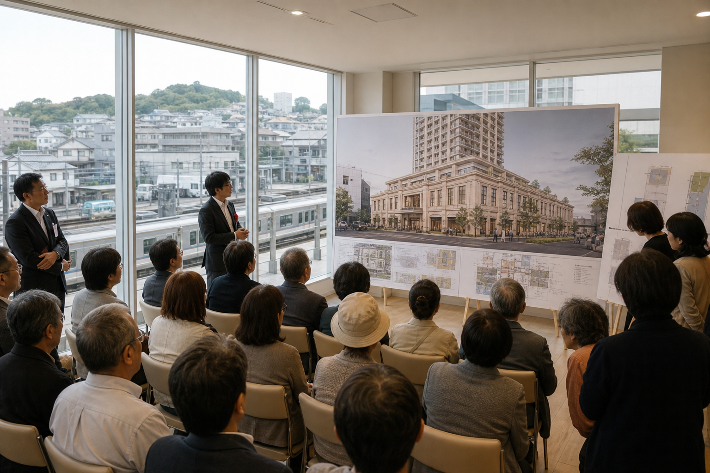
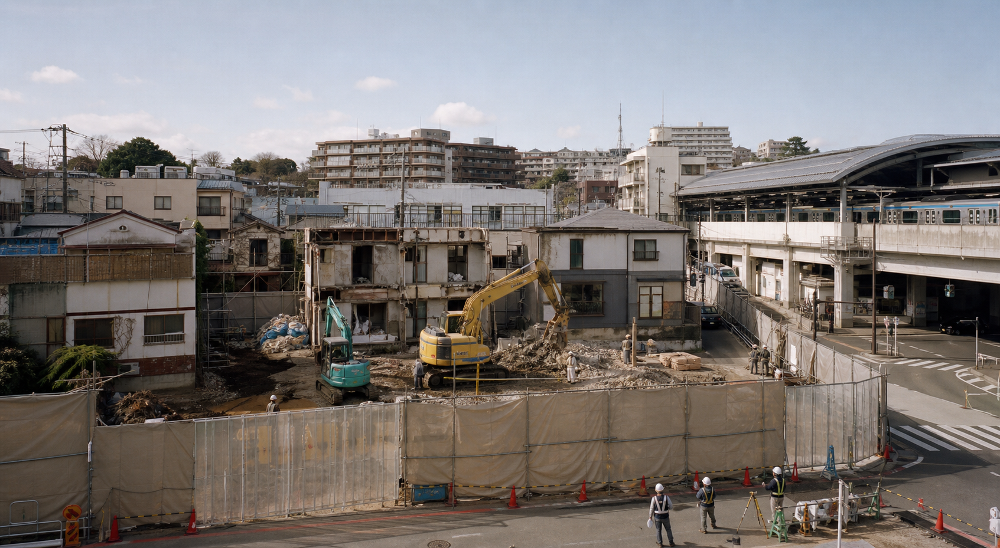
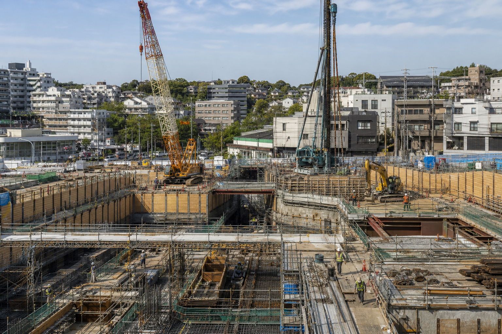
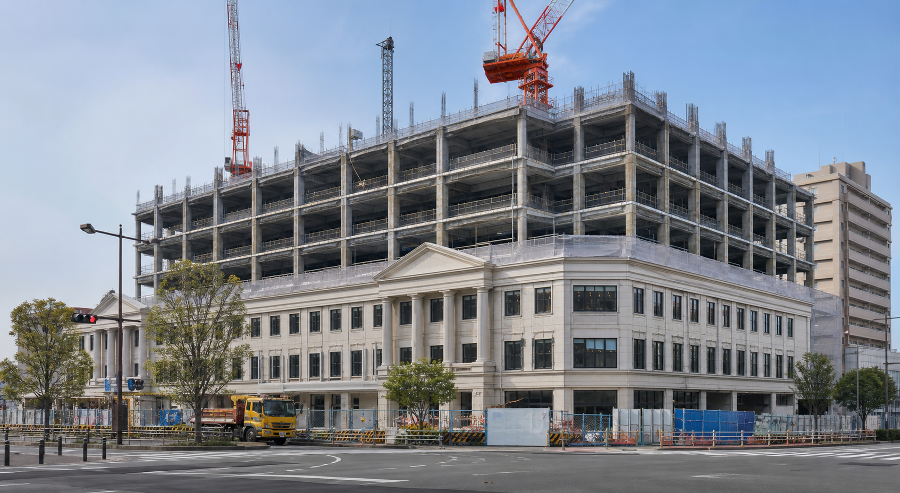
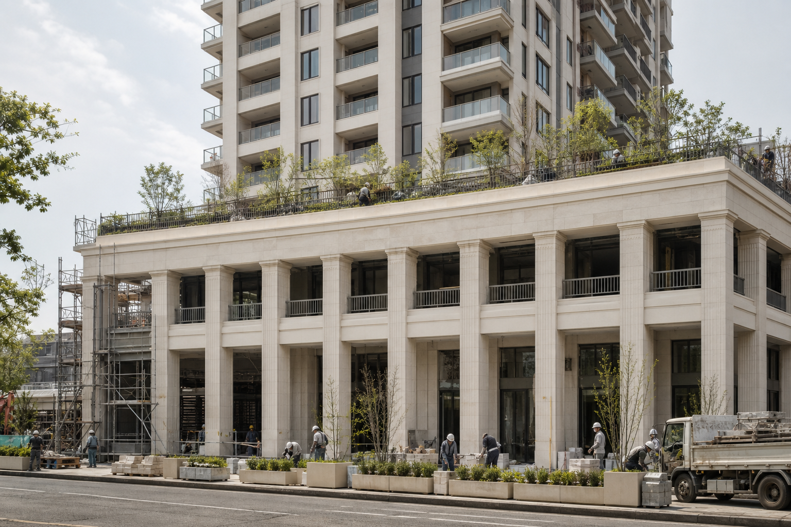
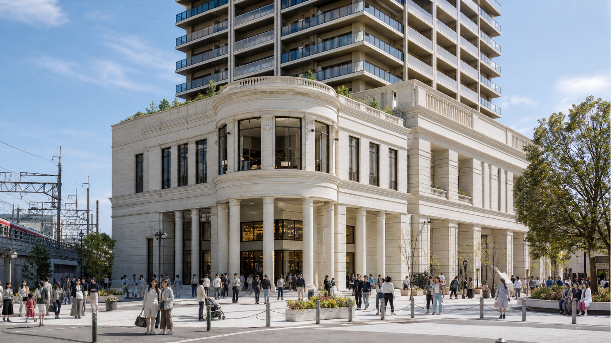

Project History
計画から竣工までの歩み
駅前の新しい生活拠点として構想され、地域との対話、設計、工事を経て完成した施設の記録です。掲載内容は本サイトの完成想定に基づくストーリーです。

駅前再整備の検討開始
駅前交通の改善、日常の買い物、地域交流、住まいを一体化する複合施設の可能性を検討し始めました。

基本構想を公表
1〜4階を商業・公共交通・公園、5〜20階を住宅とする基本構成をまとめ、地域説明会と意見交換を行いました。

設計決定・既存建物解体
ギリシャ建築を思わせる列柱と明るい石材、中央アトリウム、4階屋上公園を設計の核とし、準備工事に着手しました。

本体工事着工
地下駅接続部と基礎から工事を開始。周辺交通と歩行者動線を確保しながら段階的に躯体を立ち上げました。

商業基壇・住宅棟上棟
1〜4階の大空間と5〜20階の住宅棟が姿を現し、外装、設備、屋上緑化、交通広場の整備へ移行しました。

内装・植栽・駅前広場整備
各店舗とレジデンス共用部の内装、4階公園の植栽、館内バス・タクシー乗降場の仕上げを進めました。

竣工・まちびらき
新大倉山駅直結、大倉山駅徒歩1分の新しい拠点として、商業施設とレジデンスが一体で開業しました。